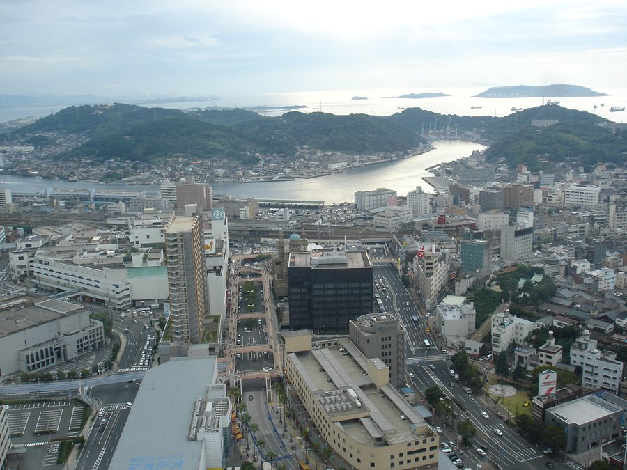
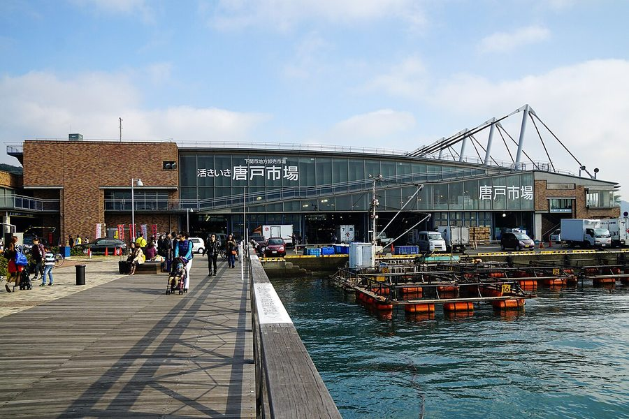
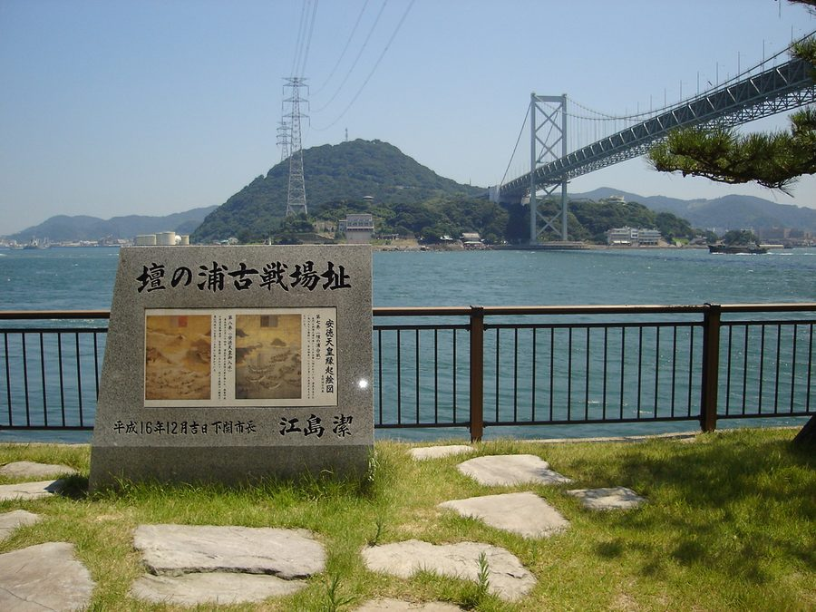
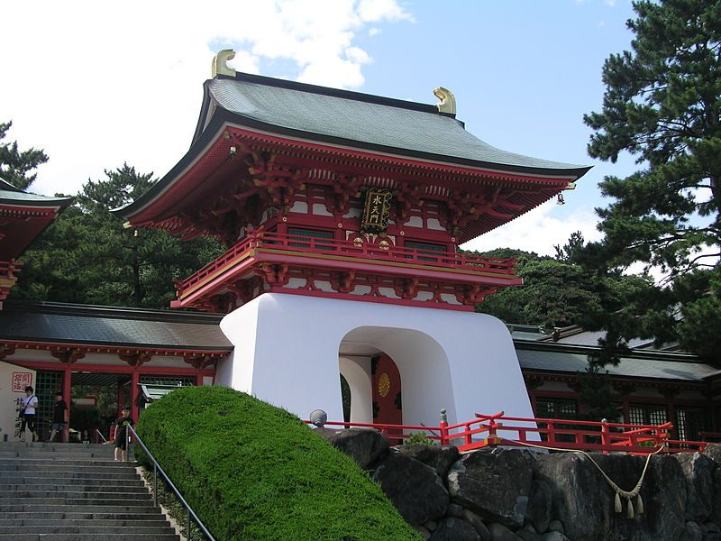

山口県下関市の日帰り温泉・銭湯・サウナ（32件）
寄り道スポット検索アプリ「ヨッテコ」の収録データから、山口県下関市の日帰り温泉・銭湯・サウナを営業時間・料金つきで一覧にしました（2026年8月時点）。
最も安いのはえびす湯（480円）。最も遅くまで入れるのはきくがわ温泉 サングリーン菊川（24:00まで）。朝風呂なら一の俣温泉 グランドホテル（8:00開店）。
山口県下関市はどんなまち？
数字で見る🔍山口県下関市
239,655人
人口（住民基本台帳・2026年1月1日）
716.26km²
面積
まちの横顔




- 地形と気候: 本州の最西端に位置し、関門海峡を挟んで西は日本海（響灘）、南は瀬戸内海（周防灘）に面しています。沖積平野を除くと稜線が海岸近くまで迫る地形で、火の山や華山などの山、彦島や角島などの島があります。気候は日本海側・瀬戸内海式・太平洋側の境界にあたり、対馬海流の影響で旧市内や響灘沿岸は夏も冬も温暖で過ごしやすい一方、豊田町や菊川町など内陸部では寒暖の差が大きくなります。
- 港町の歴史と特産: 関門海峡に面する港湾都市として栄え、大陸への玄関口の役割も担ってきました。古くは「赤間関」や「馬関」と呼ばれ、1889年には日本で最初に市制を施行した31市の1つとして赤間関市が発足し、1902年に下関市と改称しています。唐戸市場を中心に日本最大のフグの集積地としても知られ、関門海峡を臨む春帆楼は日本のふぐ料理公許第一号店です。
寄り道充実度（全国偏差値）
偏差値・順位は、ヨッテコ収録データ（2026年8月時点・26,033件）を市区町村別に集計した施設数の全国分布（1,728市区町村）から毎回算出しています。カードを押すとカテゴリ別の分析に切り替わります。
日帰り温泉から見た山口県下関市
市内の日帰り温泉は32件、全国61位タイ（上位3.5%）。——湯の選択肢は、全国の上位5%に入る。
32件
日帰り入浴施設（全国61位タイ・上位3.5%）
70偏差値
温泉充実度
735円
入浴料の中央値（判明26件・全国650円）
- 露天風呂がある店は38%で、全国水準（46%）を下回ります。本州最西端で関門海峡に面し、日本海と瀬戸内海の両方に接する市。外の眺めより、湯そのものに向き合う造りが多いということになります。
- 天然温泉を使う店は56%で、全国水準（67%）を下回ります。唐戸市場を中心に日本最大のフグの集積地として知られ、春帆楼でふぐ料理が公許された市。温泉地というより、暮らしの延長にある入浴施設が数を支えています。
- 41%——サウナの併設率は、全国の52%に届きません。対馬海流の影響で夏冬とも過ごしやすい、日較差の小さい気候の市。サウナの有無で選ぶなら、先に確認しておきたい数字です。
- 入浴料の中央値は735円でした（判明26件）。全国の650円と比べて13%高い水準です。予算を見ておくなら、735円を目安にできます。
出典: 施設データ=ヨッテコ収録データ（26,033件・2026年8月時点）。偏差値・全国順位・全国水準は全1,728市区町村の分布から毎回算出。 / 人口=総務省「住民基本台帳に基づく人口、人口動態及び世帯数」（2026年1月1日現在） / 面積=国土地理院「全国都道府県市区町村別面積調」（2026年4月1日時点） / まちの解説=日本語版Wikipedia「下関市」（https://ja.wikipedia.org/wiki/下関市、2026年8月21日取得）より作成（CC BY-SA 4.0） / 写真=Wikimedia Commons（各キャプションに作者・ライセンスを記載）
曜日別の営業施設数
| 月 | 火 | 水 | 木 | 金 | 土 | 日 |
|---|---|---|---|---|---|---|
| 27 | 30 | 28 | 28 | 31 | 31 | 30 |
月曜日が最も休みが多く（各5件が定休）、年中無休は18件です。※営業時間データのある32件で集計
入浴料金の分布（大人）
| 500円以下 | 9件 | |
| 501〜800円 | 5件 | |
| 801〜1,200円 | 8件 | |
| 1,201円以上 | 4件 |
料金が確認できた26件で集計。
施設一覧
| 施設 | 営業時間 | 料金（大人） |
|---|---|---|
| ONSEN & FITNESS wakuwaku 湧く和来 天然温泉サウナ 下関市唐戸の天然温泉施設で、男女別に異なる設備を備える。男湯はテントサウナ・洞窟風呂・五右衛門水風呂、女湯は洞窟風呂・五… | 10:00〜23:00 ※曜日により異なる | 990円 |
| えびす湯 | 15:00〜20:30（土休） | 480円 |
| きくがわ温泉 サングリーン菊川 天然温泉露天風呂 下関市菊川地区の公共の宿で、露天風呂を備えた温泉施設。温泉プールやレンタサイクルも完備し、リハビリや観光拠点として利用で… | 18:20〜24:00 | 670円 |
| だるま湯 | 15:30〜21:30 | 480円 |
| プライベートサウナ 垢田の杜 桂月 サウナ | 13:00〜20:00 ※曜日により異なる | — |
| ヘルシーランド下関 露天風呂サウナ | 10:00〜19:00 | 630円 |
| ホテル西長門リゾート 天然温泉露天風呂 | 13:00〜19:00 ※曜日により異なる | 1,000円 |
| 一の俣温泉 グランドホテル 天然温泉露天風呂サウナ 一の俣温泉の代表的旅館で、pH10を誇るトロトロの美肌湯が特徴。露天風呂と内湯を備え、化粧水のようなやさしい肌触りが人気… | 08:00〜21:00 | 1,150円 |
| 一の俣温泉 藤乃湯 天然温泉 山口県下関市豊田町にある天然温泉施設。福利厚生施設として運営されており一般利用も可能。土日祝日営業の小規模温泉施設。 | 09:00〜18:00 | 600円 |
| 下関温泉 風の海 露天風呂 下関市の海側に位置し、展望風呂から下関の風景が眺められる施設。日帰り利用では夕食と温浴をセットで楽しめる。 | 09:00〜18:00 | — |
| 割烹旅館 寿美礼 下関漁港畔の割烹旅館。3つのテーマ風呂を備えた貸切浴場で、関門海峡の眺望を楽しめる。 | 11:30〜21:00 | 2,500円 |
| 千歳湯 | 15:00〜22:00（日休） | 480円 |
| 吉見温泉センター 天然温泉 下関市の日帰り温泉施設。観光客と地元住民の交流拠点を目指す。キャンプ場も併設。 | 10:00〜20:00 | 2,500円 |
| 向洋温泉 サウナ | 16:00〜23:00（木休） | 480円 |
| 囲炉裏処なべや テントサウナ サウナ 山口県下関の秘境に位置する国登録有形文化財『清流庵』を活用したテントサウナ施設。天然の清流で水風呂を楽しみ、自然に囲まれ… | 10:00〜16:00（水休） | — |
| 国登録有形文化財 玉椿旅館 | 11:00〜14:00（水・木休） | — |
| 大河内温泉 いのゆ 天然温泉 | 09:00〜21:00 | 550円 |
| 天然温泉 和楽の湯 下関せいりゅう 天然温泉露天風呂サウナ | 10:00〜23:00（火休） | 980円 |
| 天然温泉旅館 小天狗 天然温泉露天風呂 川棚温泉の旅館で、源泉かけ流しの露天風呂が特徴。湯温が外気温で変わることがある自然派の温泉体験ができる。 | 15:00〜20:00 ※曜日により異なる | 800円 |
| 川棚グランドホテル お多福 天然温泉露天風呂サウナ | 08:00〜23:00 | 950円 |
| 川棚温泉 温泉銭湯 ぴーすふる青竜泉 天然温泉露天風呂サウナ | 10:00〜21:00 | 480円 |
| 川棚温泉 竹園旅館 天然温泉 下関の奥座敷・川棚温泉にある旅館で、源泉掛け流しの良質な湯を大浴場と小浴場で楽しめる。古くから偉人に愛されてきた温泉を体… | 15:30〜21:30 | — |
| 川棚温泉 藤屋〜fujiya〜 天然温泉 | 11:30〜22:00（月休） | 1,000円 |
| 弁天湯 | 15:30〜21:30（月休） | 480円 |
| 日乃出温泉 天然温泉サウナ | 15:00〜22:00（月休） | 480円 |
| 海峡ビューしものせき 露天風呂サウナ | 11:00〜15:00（水休） | 2,080円 |
| 竹の湯 | 15:00〜21:30（日休） | 480円 |
| 蛍光の宿 一の俣温泉観光ホテル 天然温泉露天風呂 | 09:00〜21:00 | 900円 |
| 道の駅 蛍街道西ノ市 西ノ市温泉「蛍の湯」 天然温泉露天風呂サウナ | 10:00〜21:00 | 850円 |
| 関門の宿 源平荘 天然温泉サウナ 光明石を使用した温泉で、サウナ・ジェット風呂などの設備を備えた下関の温泉宿。 | 11:00〜15:00（月休） | — |
| 関門海峡を一望できる絶景の宿 満珠荘 天然温泉 関門海峡を一望できる展望風呂が特徴の温泉。大浴場と家族風呂で火の山公園内に位置する。 | 09:00〜22:00 ※曜日により異なる | 1,560円 |
| 霧島湯 | 14:00〜21:30（木休） | 500円 |
現在地から近い順に探すなら、地図アプリ「ヨッテコ」
全国26,000件の温泉・道の駅・アイスのお店を登録不要で検索。到着時刻に営業しているかの目安も表示します。